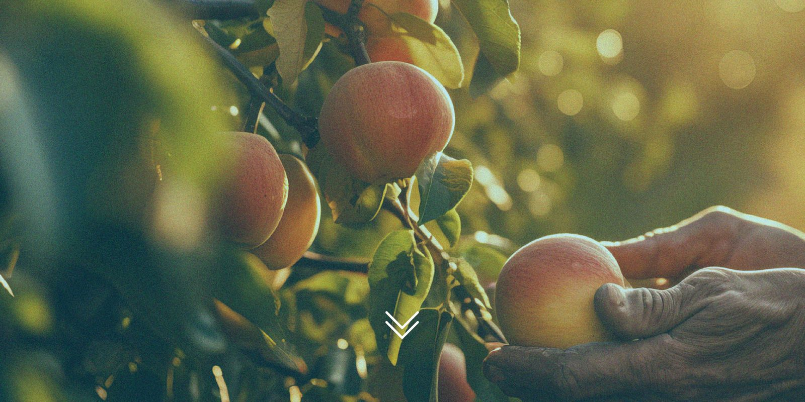

The CodeBlue Plan
Our wealth is our water. Here’s how we secure it.
British Columbia’s watersheds are the source of our health, well-being and natural wealth — and they’re under pressure from clearcutting, toxic mine waste, poor water management and a warming climate. CodeBlue is the plan to turn that around. Forever.
Move 01 · Fair share
Make big industrial users pay the true cost of water
Right now, B.C. charges industry a maximum of $2.25 per million litres — the lowest rate in Canada. Quebec charges up to $155 for the same water.
The province’s ten biggest industrial permit holders can access more than 500 billion litres a year for under $1 million combined. Fracking, mining and bottling operations pay pennies while communities ration.
The fix: modern water rates, publicly reported water use, and every new dollar — up to $100 million a year — reinvested in watershed security, restoration and drought preparedness.


Move 02 · Real consequences
Get tough on water wasters and polluters
When a fine costs less than compliance, it’s not a penalty — it’s a subscription fee for polluting.
B.C. companies have racked up hundreds of violations with penalties that barely dent a quarterly report. 55% of British Columbians say enforcement isn’t tough enough; 82% support jail and fines for corporate polluters.
The fix: tougher rules, funded enforcement, stronger penalties — and full implementation of the Water Sustainability Act, ten years on the books and still waiting.
Move 03 · Local power
Give local people the power and resources to protect their water
Nobody knows a watershed like the people who drink from it, fish it, farm it and live beside it.
The fix: funding, training and real decision-making authority for communities — local watershed boards where residents, First Nations, farmers and local governments manage droughts, floods and restoration together. 79% of British Columbians support creating them.
It’s already working. In the Nicola Valley, water scarcity is assessed by the Nk’eʔxép Management Committee — weighing streamflow, snowpack and fish health alongside Syilx law and the teachings of the Four Food Chiefs. Their assessments feed the province’s own monitoring system. See their live assessments →

The backbone: a permanent fund
Security means funding that outlasts a budget cycle
In 2023, B.C. seeded a Watershed Security Fund with an initial $100 million, co-developed with First Nations — a real start. But a fund that guards the water for every community, forever, needs to grow toward $1 billion — with modernized industrial water rates topping it up every single year.
the endowment target that makes watershed funding permanent, not political
potential annual revenue from charging industry fair, modern water rates
of British Columbians call a $2B fund a good idea — more than any megaproject tested
Disasters are expensive. Security is cheap. One bad flood year costs more than the entire fund.
Fair questions
“But won’t this…”
…raise costs for regular people?
No. The CodeBlue plan targets large industrial extractors — fracking, mining, bottling — not households or farms. British Columbians overwhelmingly oppose new household water fees, and this plan doesn’t create any. It asks the biggest users to stop paying 70 times less than they would in Quebec.
…hurt jobs and the economy?
The watershed sector already supports 47,900 jobs and $5 billion in GDP in B.C. — and restoration money is spent locally, in every region. Only about one in ten British Columbians strongly believes stronger water rules would harm the economy. What actually hurts the economy: drought-stalled farms, flooded highways, and fisheries closures.
…duplicate what government already does?
The gap is the point. The Water Sustainability Act passed a decade ago and still isn’t fully implemented. There is no permanent funding, no local governance system, and enforcement is chronically under-resourced. CodeBlue asks the province to finish the job it started.
…conflict with Indigenous rights?
The opposite: the plan is built on collaboration. Indigenous nations hold constitutionally protected rights and millennia of water stewardship. Co-governance — like the Indigenous-led scarcity assessments already happening in the Nicola Valley — is central to how watershed security works, consistent with B.C.’s commitments under UNDRIP.

It’s time we start treating our watersheds like our lives depend on them.
Because they do.